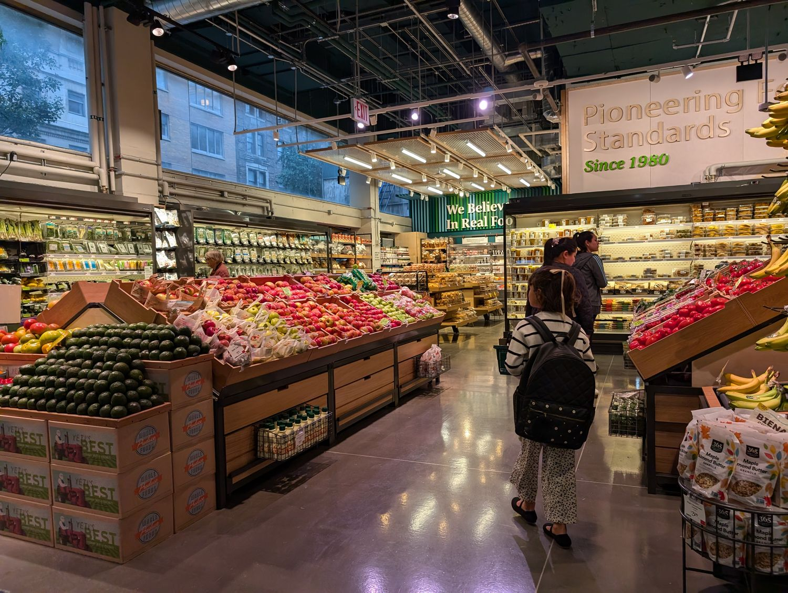
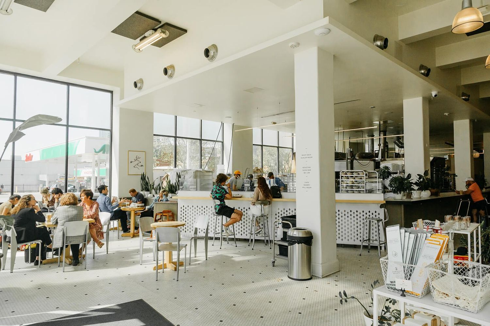

Retail & Restaurant Accounting
Margins this thin leave no room for financials that arrive six weeks late. Accounting for retailers, restaurants, and multi-unit operators across the Midwest.
Independent restaurants · Multi-unit operators · Franchisees · Independent retail · Consumer brands · Specialty food

Retail & RestaurantsWe have advisors with real experience in retail and restaurants, so the conversation starts where your business actually is, not with a primer on how it works.

Where this industry stands right now.
Costs have fundamentally reset
Food and labor costs are each up roughly 35% over five years. More than 9 in 10 operators cite food, labor, insurance, energy, and swipe fees as significant challenges. This is a structural change, not a temporary spike.
Growth is nearly flat in real terms
US foodservice sales are projected to top $1.55 trillion in 2026, but inflation-adjusted growth is only about 1.3%. Traffic fell in 2025. The pie is barely growing, which means margin discipline decides who wins.
Timing beats analysis
Operators who protect margin manage prime cost in real time rather than reviewing it after the month closes. The gap between top and bottom quartile performers is driven by cost discipline, not revenue volume.
Where we focus in this industry.
The financial work that actually moves the needle here, rather than a generic checklist.
- Prime cost needs to be visible weekly, not discovered at month end when it's too late to act.
- Food cost variance by category tells you where margin is leaking, and standard bookkeeping won't surface it.
- Labor scheduled against forecast by daypart is the single highest-leverage control you have.
- Multi-unit operators need location-level P&Ls, not one consolidated statement that hides the problem unit.
What we do for retail and restaurant owners.
Bookkeeping, payroll, and financial reporting built around how retailers and restaurants actually operate.
Restaurant & retail bookkeeping
Clean monthly books by location, with sales, tips, and vendor costs coded the way operators actually read them.
Payroll for hourly teams
Tipped wages, overtime, seasonal staffing, and multi-state payroll without the year-end surprises.
Prime cost & margin reporting
Food, labor, and cost-of-goods variance surfaced weekly, not discovered after the month closes.
Multi-unit & franchise reporting
Location-level P&Ls so one weak unit cannot hide inside a healthy consolidated number.
Expansion & exit readiness
Financials that hold up when a lender, franchisor, or buyer starts asking questions.
Fractional CFO for growth
Expansion, financing, and buy-sell decisions with a finance partner, before a full-time CFO makes sense.
Common questions, answered.
What does accounting for a restaurant or retail business include?
Typically monthly bookkeeping by location, payroll for hourly and tipped staff, and reporting that shows prime cost, cost of goods, and margin by unit. We build the set that fits your operation rather than a generic package.
Do you work with multi-unit operators and franchisees?
Yes. Multi-unit and franchise groups are a core focus. We set up location-level reporting so you can see which units are driving margin and which are leaking it.
Can you help if my books are behind or messy?
Yes. We start by getting the records current and reliable, then move you onto a regular monthly close so the numbers arrive while they can still change a decision.
Where do you work with retail and restaurant clients?
We work with retailers, restaurants, and other founder-led businesses across the Midwest.
Know where you stand before someone else decides for you.
Tell us about your business and we'll give you a straight read on where your financials are, and what it would take to get them where they need to be.
Start a Conversation